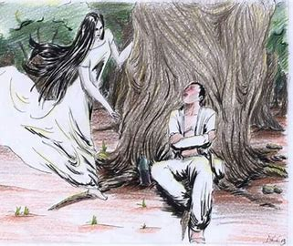

LEYENDAS DEL ESTADO CAMPECHE
meximiedo
¿CUAL ES LA HISTORIA DEL ESTADO Y COMO SURGIO?
El estado de Campeche, situado en la península de Yucatán, tiene una historia rica y compleja que abarca desde la época prehispánica hasta su establecimiento como estado independiente dentro de la República Mexicana. A continuación, te presento un resumen de cómo surgió Campeche:
- Época Prehispánica
Antes de la llegada de los españoles, la región que hoy conocemos como Campeche estuvo habitada por diversas culturas mayas. Estas comunidades establecieron importantes ciudades y centros ceremoniales, como Edzná y Calakmul. Los mayas de Campeche eran conocidos por sus avanzados conocimientos en astronomía, arquitectura y agricultura.
- Llegada de los Españoles
El explorador español Francisco Hernández de Córdoba fue uno de los primeros europeos en llegar a la península de Yucatán en 1517. Sin embargo, fue en 1540 cuando Francisco de Montejo, "el Mozo", fundó la villa de San Francisco de Campeche, estableciendo un asentamiento permanente en la región. Los españoles encontraron una resistencia inicial por parte de los mayas, pero eventualmente lograron consolidar su dominio sobre el área.
- Época Colonial
Durante el período colonial, Campeche se convirtió en un importante puerto y centro comercial. La ciudad de Campeche prosperó gracias al comercio de productos como el palo de tinte, una madera valiosa utilizada para teñir telas, así como el chicle y el azúcar. La riqueza de la región atrajo la atención de piratas y corsarios, lo que llevó a la construcción de impresionantes fortificaciones, como el Fuerte de San Miguel y el Fuerte de San José el Alto, para proteger la ciudad de los ataques.
- Independencia de México
Campeche fue parte de la Capitanía General de Yucatán durante la mayor parte del período colonial. Después de la independencia de México en 1821, la península de Yucatán, incluyendo Campeche, se unió a la nueva nación. Sin embargo, la región enfrentó desafíos políticos y económicos, incluyendo intentos separatistas y conflictos con el gobierno central mexicano.
- Separación de Yucatán y Creación del Estado de Campeche
El 7 de agosto de 1857, Campeche se separó formalmente del estado de Yucatán. Este proceso de separación fue impulsado por diferencias políticas y económicas entre las élites de Campeche y Mérida (la capital de Yucatán). Finalmente, el 29 de abril de 1863, el presidente Benito Juárez decretó la creación del estado de Campeche, reconociendo su autonomía y estableciendo su capital en la ciudad de Campeche.
- Desarrollo y Modernización
Durante el siglo XIX y principios del siglo XX, Campeche continuó desarrollándose como un centro agrícola y pesquero. La explotación del chicle y el petróleo también jugaron un papel importante en la economía regional. En las últimas décadas, Campeche ha diversificado su economía, con un enfoque en el turismo, gracias a su rica herencia cultural y arqueológica, y la exploración de hidrocarburos en la Sonda de Campeche.
- Patrimonio Cultural
Hoy en día, Campeche es reconocido por su bien conservada arquitectura colonial, sus impresionantes sitios arqueológicos mayas y su vibrante cultura local. En 1999, el centro histórico de la ciudad de Campeche fue declarado Patrimonio de la Humanidad por la UNESCO, lo que ha contribuido a su atractivo como destino turístico.
En resumen, Campeche surgió a través de un proceso de desarrollo que abarca desde las avanzadas civilizaciones mayas, pasando por la colonización española y los desafíos post-independencia, hasta convertirse en un estado próspero y culturalmente rico dentro de la República Mexicana.
en este estado tan bello y tan lindo que tiene mexico se encuentran algunas leyendas que son especiales en este estado y aqui como les redacto se las voy mencionando y espero que sea de tu agrado las leyendas que te traigo.
LA PRIMERA LEYENDA ES LA XTABAY
La leyenda de la Xtabay es una de las historias más fascinantes y aterradoras del folclore maya, especialmente en la península de Yucatán, que incluye el estado de Campeche. Esta leyenda nos habla de una mujer fantasmagórica que atrae a los hombres para luego llevarlos a su perdición.
La Leyenda de la Xtabay
- Orígenes y Descripción
La Xtabay es una figura mítica que se dice habita en los bosques, selvas y cenotes de la península de Yucatán. Se la describe como una mujer de extraordinaria belleza, con largos cabellos negros y ojos hipnotizantes. Viste un huipil blanco y suele aparecer en las noches, especialmente en los caminos rurales y cerca de los cenotes.
- Historia
La leyenda cuenta que la Xtabay era en vida una mujer llamada Xtabay, cuyo verdadero nombre era Xkeban. Ella vivía en un pequeño pueblo y era conocida por su bondad y compasión hacia los enfermos y pobres, aunque su comportamiento libre y su rechazo a las normas sociales de la época la hicieron objeto de chismes y desprecio por parte de las mujeres del pueblo.
Xkeban tenía una hermana llamada Utz-Colel, que era todo lo contrario a ella. Utz-Colel era vista como una mujer virtuosa y respetada, pero en realidad era fría, cruel y carente de empatía. Cuando Xkeban murió, de su tumba comenzó a emanar un dulce y embriagador aroma a flores, llenando el aire de una fragancia celestial. Este hecho sorprendió a todos, especialmente a su hermana, quien no podía entender cómo una mujer de mala reputación podía tener tal signo de pureza en su muerte.
- La Transformación
Tras la muerte de Xkeban, Utz-Colel también falleció. Sin embargo, de su tumba no emergió ningún aroma agradable; al contrario, emanaba un olor fétido y desagradable. Llena de envidia y odio, Utz-Colel pidió a los espíritus oscuros que la convirtieran en una hermosa mujer después de su muerte para atraer a los hombres y demostrar su poder.
Como resultado, Utz-Colel se transformó en la Xtabay, un espíritu maligno que aparece como una hermosa mujer para atraer a los hombres que viajan solos. La Xtabay se manifiesta especialmente en las noches de luna llena, esperando en los caminos y cerca de los cenotes.
- El Encuentro
Los hombres que se encuentran con la Xtabay son atraídos por su belleza y su encanto sobrenatural. Ella los seduce con su voz suave y su mirada profunda, llevándolos a seguirla hacia la selva o los cenotes. Una vez que los tiene a su merced, revela su verdadera naturaleza maligna. En algunas versiones de la leyenda, se dice que la Xtabay devora a sus víctimas, mientras que en otras simplemente los hace perderse para siempre en la selva, donde mueren de sed o hambre.
- Lección y Advertencia
La leyenda de la Xtabay sirve como una advertencia sobre los peligros de sucumbir a las tentaciones y las apariencias engañosas. También refleja la importancia de la humildad y la verdadera virtud, en contraste con la hipocresía y la apariencia superficial de bondad.
- Conclusión
La leyenda de la Xtabay es un relato profundamente enraizado en la cultura y las tradiciones mayas. Además de ser una historia de terror, es una reflexión sobre la verdadera naturaleza de la virtud y la bondad, y una advertencia sobre las consecuencias de la envidia y la crueldad. En Campeche y el resto de la península de Yucatán, la Xtabay sigue siendo una figura temida y respetada, un recordatorio de las fuerzas misteriosas que habitan en la naturaleza y en el corazón humano.

A CONTINUACION MOSTRARE UN ARCHIVO AUDIO VISAL DE ESTA LEYENDA(aun que cuenta tambien la leyenda pero alfinal muestra un video)
LA SEGUNDA LEYENDA ES EL FANTASMA DE LA MUJER DE BLANCO DEL MALECON DE CAMPECHE
La leyenda del Fantasma de la Mujer de Blanco en el Malecón de Campeche es una de las historias más inquietantes y populares en esta región del sureste mexicano. Esta leyenda ha sido transmitida de generación en generación y continúa siendo un relato fascinante que mezcla elementos de amor, tragedia y misterio.
La Leyenda del Fantasma de la Mujer de Blanco en el Malecón de Campeche
- El Origen de la Leyenda
La historia se sitúa en el Malecón de Campeche, un hermoso paseo marítimo que bordea la costa de la ciudad. Según la leyenda, hace muchos años, una joven pareja se enamoró profundamente. Ella era una hermosa joven de familia adinerada, y él, un humilde marinero. Pese a la oposición de la familia de la joven, los dos continuaron viéndose en secreto, especialmente en el Malecón, donde disfrutaban de la brisa marina y la tranquilidad del mar.
- La Tragedia
La felicidad de la pareja no duró mucho. La familia de la joven, al descubrir el romance, la obligó a comprometerse con un hombre de su mismo estatus social. Desesperada y sintiéndose traicionada por su propio corazón y su familia, la joven decidió que no podía vivir sin su verdadero amor. Una noche, con el corazón roto y llena de tristeza, la joven se vistió con su vestido de novia y fue al Malecón. Allí, mirando al mar que tanto amaba, decidió quitarse la vida, lanzándose a las aguas profundas.
- La Aparición
Desde esa trágica noche, muchas personas han reportado ver el fantasma de una mujer vestida de blanco caminando por el Malecón de Campeche. Se dice que aparece especialmente en noches de luna llena, cuando la luz de la luna ilumina suavemente el paseo marítimo. Los testigos describen a la mujer como una figura etérea, con un vestido de novia blanco que ondea con el viento y una expresión de profunda tristeza en su rostro.
- Los Encuentros
Aquellos que afirman haber visto al fantasma relatan una experiencia inquietante. Algunos aseguran haberla visto deambular por el Malecón, mirando hacia el mar con una expresión melancólica. Otros dicen que han escuchado sus sollozos y lamentos en las noches tranquilas, como un eco de su dolor eterno. Hay quienes incluso aseguran que la han visto lanzarse al agua solo para desaparecer al tocar la superficie.
- Consecuencias
La leyenda del Fantasma de la Mujer de Blanco se ha convertido en parte del folclore local de Campeche. Los habitantes de la ciudad y los visitantes se cuentan la historia, algunos como advertencia y otros como una simple curiosidad. La historia sirve como un recordatorio de los trágicos resultados de un amor prohibido y la desesperación que puede causar.
- Interpretaciones
La leyenda es una reflexión sobre el amor trágico y las consecuencias de las decisiones impulsadas por la desesperación. También es un recordatorio de cómo las restricciones sociales y familiares pueden llevar a finales desafortunados. La aparición de la Mujer de Blanco en el Malecón de Campeche es vista como un alma en pena que busca la paz y el consuelo que no encontró en vida.
- Conclusión
El Fantasma de la Mujer de Blanco en el Malecón de Campeche es una leyenda que combina elementos de tragedia, amor y misterio. Esta historia continúa capturando la imaginación de quienes visitan el Malecón y sienten la presencia de la joven en pena, perpetuando una leyenda que sigue viva en la memoria colectiva de Campeche.
A CONTINUACION LES MOSTRARE UN REPORTAJE DE IMAGEN TV DONDE HABLAN DE ESTA LEYENDA
LA TERCERA LEYENDA ES LA LEYENDA DEL PIRATA LORENCILLO
La leyenda del Pirata Lorencillo es una de las historias más fascinantes y aterradoras de la costa de Campeche. Este relato, basado en eventos históricos, mezcla la realidad de los ataques piratas del siglo XVII con elementos de misterio y terror que han sido transmitidos a través de generaciones.
La Leyenda del Pirata Lorencillo
- El Contexto Histórico
Lorencillo, cuyo nombre verdadero era Laurens de Graaf, fue un temido pirata holandés que operó en el Caribe y el Golfo de México durante el siglo XVII. Conocido por su ferocidad y astucia, Lorencillo se convirtió en una figura legendaria entre los marinos y habitantes de las costas que saqueaba. La ciudad de Campeche, debido a su posición estratégica y su prosperidad, fue uno de sus objetivos más notorios.
- El Ataque a Campeche
En 1685, Lorencillo, junto con su compañero pirata Nicolas van Hoorn, dirigió uno de los ataques más devastadores contra la ciudad de San Francisco de Campeche. Los piratas llegaron al puerto y, utilizando tácticas de engaño, lograron tomar la ciudad por sorpresa. Durante el ataque, saquearon iglesias, casas y almacenes, llevándose consigo una gran cantidad de riquezas y causando terror entre los habitantes.
- La Maldición del Tesoro
La leyenda cuenta que, durante el saqueo, Lorencillo acumuló un tesoro inmenso compuesto de oro, plata, joyas y otros objetos de valor. Antes de abandonar Campeche, escondió gran parte de este tesoro en algún lugar secreto cerca de la ciudad, quizás en una cueva o enterrado en la playa. Según la leyenda, Lorencillo maldijo el tesoro, jurando que cualquiera que intentara encontrarlo sufriría una muerte horrible.
- Las Apariciones
Desde el saqueo, muchos han intentado encontrar el tesoro de Lorencillo. Sin embargo, la leyenda asegura que el fantasma del pirata sigue rondando las costas de Campeche, protegiendo su botín escondido. Los pescadores y habitantes locales han reportado avistamientos de una figura espectral, vestida con las ropas de un pirata, que deambula por las playas y cerca de las ruinas de la antigua ciudad. Se dice que este espíritu aparece especialmente en noches de tormenta, cuando los truenos y relámpagos iluminan el mar.
- Encuentros Sobrenaturales
Aquellos que han afirmado haber visto al fantasma de Lorencillo describen una experiencia aterradora. Algunos dicen que han escuchado susurros y risas macabras en la oscuridad, mientras que otros han visto luces inexplicables moviéndose en el horizonte. Los más desafortunados que intentaron buscar el tesoro maldito han reportado accidentes inexplicables, enfermedades súbitas o desapariciones misteriosas, reforzando la creencia de que el tesoro está realmente maldito.
- Consecuencias de la Leyenda
La leyenda del Pirata Lorencillo ha dejado una marca profunda en la cultura popular de Campeche. Sirve como una advertencia sobre la codicia y la ambición desmedida, y es una historia que se cuenta para recordar los peligros de desafiar lo desconocido. También se ha convertido en un atractivo para los turistas y aventureros que visitan la región, esperando encontrar algún rastro del infame tesoro pirata.
- Conclusión
La leyenda del Pirata Lorencillo es una mezcla de hechos históricos y relatos sobrenaturales que reflejan el impacto duradero de los ataques piratas en la costa de Campeche. Esta historia no solo enriquece el patrimonio cultural de la región, sino que también mantiene viva la fascinación por los misterios del mar y los tesoros escondidos.
lamentablemente no se puede ver el video de la leyenda del pirata Lorencillo porque es muy grande y no se puede verlo en el navegador de internet
TOCA PARA REGRESAR A LA PAGINA PRINCIPAL